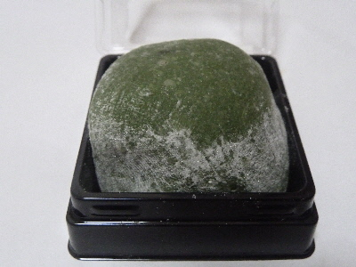

いけがみの蓬大福
2018/05/04
蓬って「よもぎ」って読むんですね。普段カタカナしか使ってないです。

お餅多めの大福でした。
ヨモギ味がしっかりあって、甘ずぎないで美味しかったです。
ヨモギの量が私にはちょうどいい味だな思いました。
ページトップへ
鳥取県米子市錦町2-205
2018/05/04
蓬って「よもぎ」って読むんですね。普段カタカナしか使ってないです。

お餅多めの大福でした。
ヨモギ味がしっかりあって、甘ずぎないで美味しかったです。
ヨモギの量が私にはちょうどいい味だな思いました。
ページトップへ